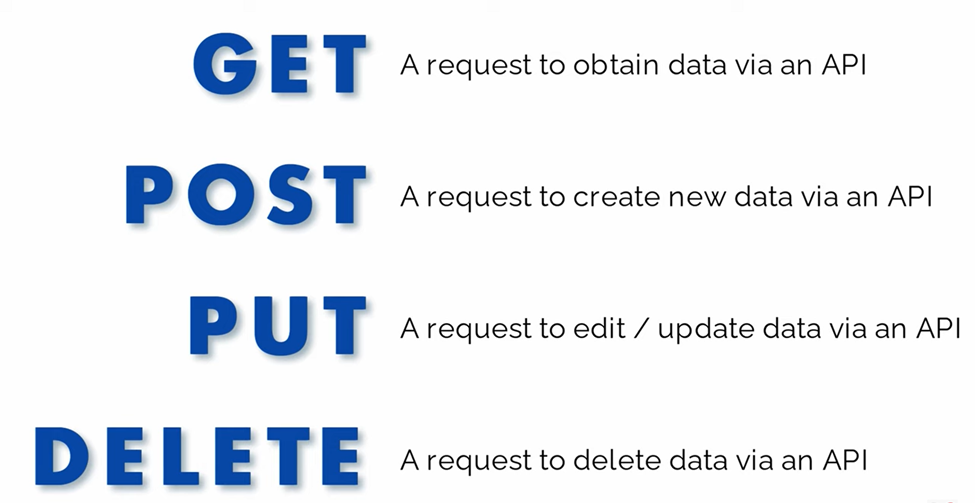
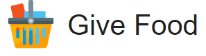
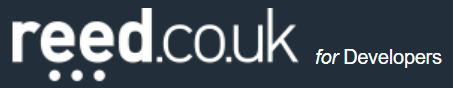

How to fetch API data in R and Python
This API tutorial will teach you how to fetch data from an external source using HTTP requests and parse the data into a usable format.
1 What is an API?
An API (Application Programming Interface) is a set of protocols, routines, and tools used for building software applications. It is essentially a set of rules and methods that data analyst or software developers can use to interact with and access the services and features provided by another application, service or platform.
In simpler terms, an API allows different software applications to communicate with each other and share data in a standardized way. With APIs, developers or analysts can get data without needing to scrape the website, manually download it, or directly go to the company from which they need it.

For example, if you want to integrate a weather forecast feature into your app, you can use a weather API that provides the necessary data, rather than building the entire feature from scratch. This allows you to focus on the unique aspects of your app, without worrying about the underlying functionality.
2 Type of request methods
As shown in Figure 2, the most common type of API request method is GET.
3 General rules for using an API
To use an API to extract data, you will need to follow these steps:
Find an API that provides the data you are interested in. This may involve doing some research online to find available APIs.
Familiarize yourself with the API’s documentation to understand how to make requests and what data is available.
Use a programming language to write a script that sends a request to the API and receives the data. Depending on the API, you may need to include authentication parameters in the request to specify the data you want to receive.
Parse the data you receive from the API to extract the information you are interested in. The format of the data will depend on the API you are using, and may be in JSON, XML, or another format.
Process the extracted data in your script, or save it to a file or database for later analysis.
4 How to fetch API data using a programming language
4.1 with R
There are several packages available in R for consuming APIs. Some of the most commonly used packages are:
httr: This package provides convenient functions for making HTTP requests and processing the responses.
jsonlite: This package is used for parsing JSON data, which is a common format for API responses.
RCurl: This package is a wrapper around the libcurl library, which is a powerful and versatile HTTP client library.
To get data from an API in R, you need to follow these steps:
- Install the required packages by running the following command in the R console:
install.packages(c("httr", "jsonlite", "RCurl"))- Load the packages by running the following command:
library(httr)
library(jsonlite)
library(RCurl)- Make an API request by using the GET function from the httr package. The API endpoint should be passed as an argument to this function.
response <- GET("https://api.example.com/endpoint")- Check the status code of the response to see if the request was successful. A status code of
200indicates a successful request.
status_code <- status_code(response)- Extract the data from the response. If the API returns data in JSON format, you can use the
fromJSONfunction from thejsonlitepackage to parse the data. Store the data in a variable for later use.
api_data <- fromJSON(content(response, as = "text"))These are the basic steps to get data from an API in R. Depending on the API, you may need to pass additional parameters or authentication information in your request. For example,
response <- GET(
"https://api.example.com/endpoint",
authenticate(
user = "API_KEY_HERE",
password = "API_PASSWORD_HERE",
type = "basic"
)
)4.2 with Python
To use an API in Python, you can use a library such as requests or urllib to send HTTP requests to the API and receive responses. Here’s an example of how to use an API in Python using the requests library:
import requests
# Define the API endpoint URL and parameters
endpoint = 'https://api.example.com/data'
params = {'param1': 'value1', 'param2': 'value2'}
# Send a GET request to the API endpoint
response = requests.get(endpoint, params = params)
# Check if the request was successful
if response.status_code == 200:
# Parse the response JSON data
data = response.json()
# Process the data, for example by printing it to the console
print(data)
else:
print(f'Error: {response.status_code}')In this example, we’re using the requests library to send a GET request to an API endpoint at https://api.example.com/data, passing two parameters (param1 and param2) in the request. The requests.get() method returns a Response object, which we can use to check the response status code and parse the response data.
If the status code is 200, we can assume the request was successful, and we can parse the response data using the response.json() method, which converts the JSON-formatted response to a Python object. We can then process the data as needed, for example by printing it to the console.
Of course, the exact API endpoint and parameters will depend on the specific API that you are using, and you’ll need to consult the API documentation to learn how to construct your request correctly. But this example should give you a sense of the general process involved in using an API in Python.
5 Practical example in R and Python
We will use R and Python to fetch the API data without and with the key.
5.1 Without the key
In this example, we will use an API from a site called  that uses an API without an API key. In this case, we will be using a GET request to fetch the API data at the food banks using this link: https://www.givefood.org.uk/api/2/foodbanks. Please follow the steps in Section 4.1 for R and Section 4.2 for Python.
library(httr)
library(jsonlite)
library(dplyr)
response <- GET("https://www.givefood.org.uk/api/2/foodbanks")
status_code(response)#> [1] 200food_dataframe <- fromJSON(content(response, as = "text"), flatten = TRUE)
food_dataframe %>%
dim()#> [1] 802 27food_dataframe %>%
head()import requests
import pandas as pd
response = requests.get("https://www.givefood.org.uk/api/2/foodbanks")
# Check if the request was successful
print(response.status_code)
# Parse the response JSON data#> 200food_json = response.json()
# Convert to a pandas dataframe
food_dataframe = pd.json_normalize(food_json)
food_dataframe.shape#> (802, 27)food_dataframe.head()#> name ... politics.urls.html
#> 0 Breadline Project ... https://www.givefood.org.uk/needs/in/constitue...
#> 1 Durness & Kinlochbervie ... https://www.givefood.org.uk/needs/in/constitue...
#> 2 Belton Pantry ... https://www.givefood.org.uk/needs/in/constitue...
#> 3 Omagh Community Church ... https://www.givefood.org.uk/needs/in/constitue...
#> 4 The Well (Gorleston) ... https://www.givefood.org.uk/needs/in/constitue...
#>
#> [5 rows x 27 columns]In this example, we use the pd.json_normalize() method to flatten the list of dictionaries and create a dataframe from it. The resulting dataframe has columns for each key in the JSON objects.
5.2 With the key
In this example, we will use an API from  that uses an API key. In this case, we will use a GET request to fetch data for analyst jobs based in London from the Jobseeker API. Please follow the steps in Section 4.1 for R and Section 4.2 for Python, and sign up for the API key at the Jobseeker website.
library(httr)
library(jsonlite)
library(dplyr)
# Create a GET response to call the API
response <- GET(
"https://www.reed.co.uk/api/1.0/search?keywords=analyst&location=london&distancefromlocation=15",
authenticate(
user = Sys.getenv("putyourapikeyhere"),
password = ""
)
)Replace Sys.getenv("putyourapikeyhere") with your own API key.
status_code(response)#> [1] 200# Convert the JSON string to a dataframe and view data in a table
job_dataframe <- fromJSON(content(response, as = "text"), flatten = TRUE)
# The job dataframe is inside the results
job_dataframe$results %>%
dim()#> [1] 100 15job_dataframe$results %>%
head()import requests
import pandas as pd
# Set API endpoint and API key
url = "https://www.reed.co.uk/api/1.0/search?keywords=analyst&location=london&distancefromlocation=15"
api_key = "replace with your own API key"
# Send a GET request to the API endpoint
response = requests.get(url, auth=(api_key, ''))# Check if the request was successful
print(response.status_code)
# Parse the response JSON data#> 200job_json = response.json()
# Convert to a pandas dataframe
# The dataframe is inside the results
job_dataframe = pd.json_normalize(job_json["results"])
job_dataframe.shape#> (100, 15)job_dataframe.head()#> jobId ... jobUrl
#> 0 49753801 ... https://www.reed.co.uk/jobs/data-protection-an...
#> 1 49820903 ... https://www.reed.co.uk/jobs/senior-actuarial-a...
#> 2 49820897 ... https://www.reed.co.uk/jobs/transaction-servic...
#> 3 49175461 ... https://www.reed.co.uk/jobs/copacking-analyst/...
#> 4 49779097 ... https://www.reed.co.uk/jobs/help-desk-analyst/...
#>
#> [5 rows x 15 columns]You can now use the data for your data science.
I hope you enjoy this article. You can find its GitHub repository here, and if you like this write-up, you can also follow me on Twitter and Linkedin for more updates on R, Python, and Excel for data science.
This article is fully sponsored by Olubukunola Oyedele, Director of Systems, Epidemiology, and Education, 54gene.